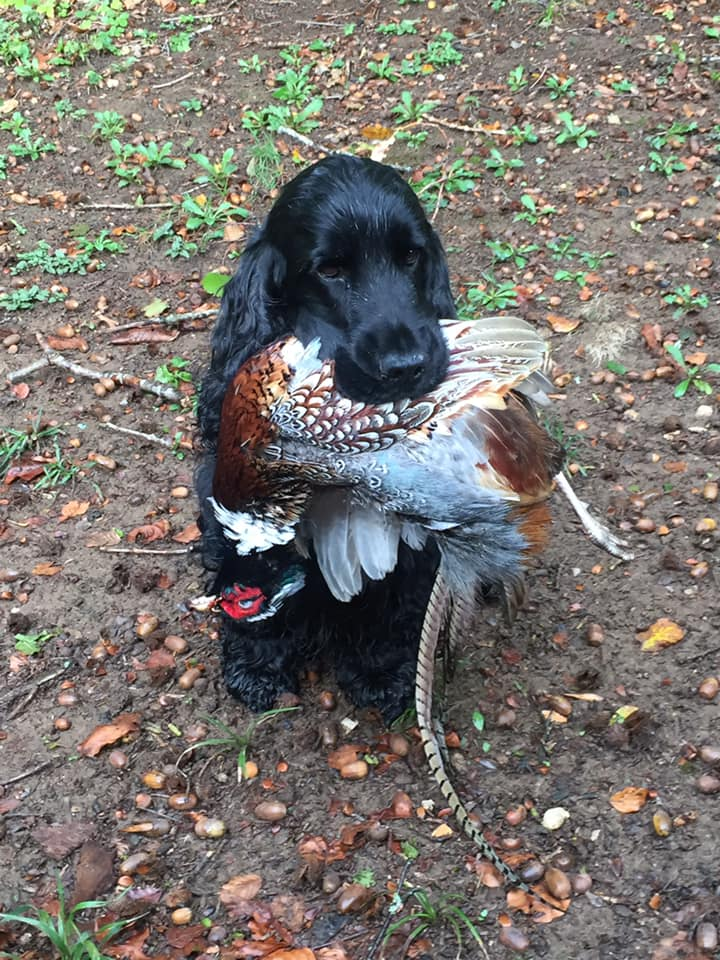
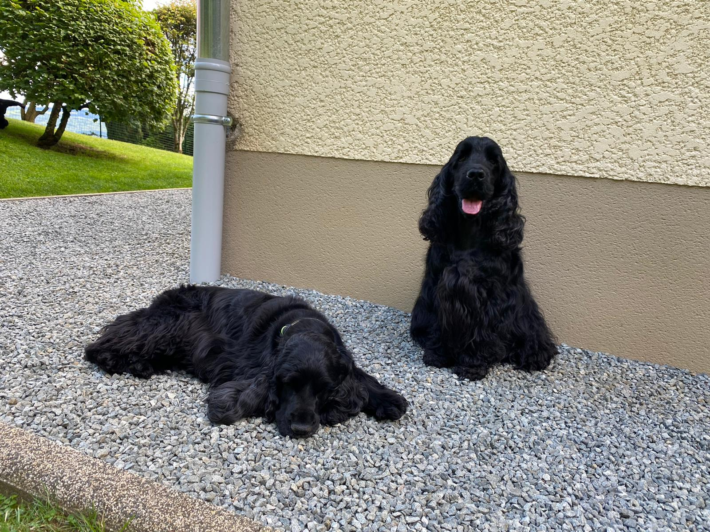
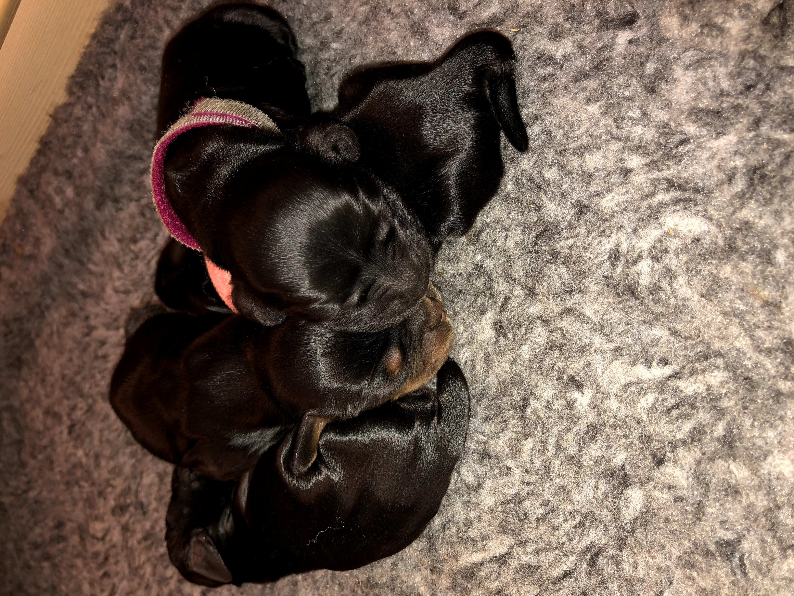
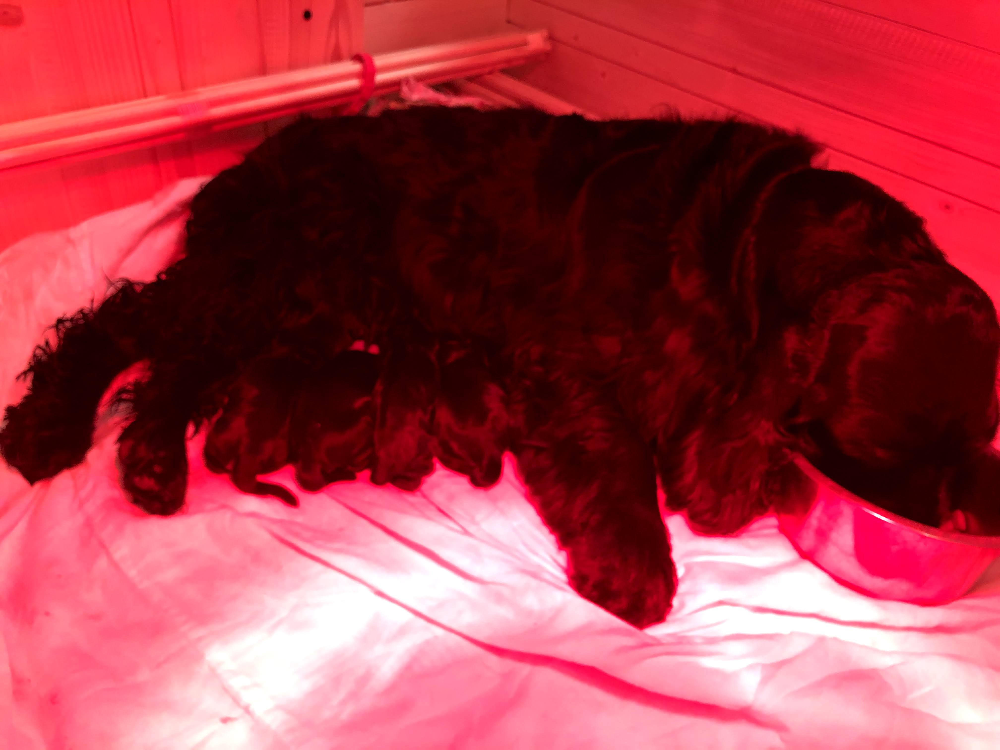
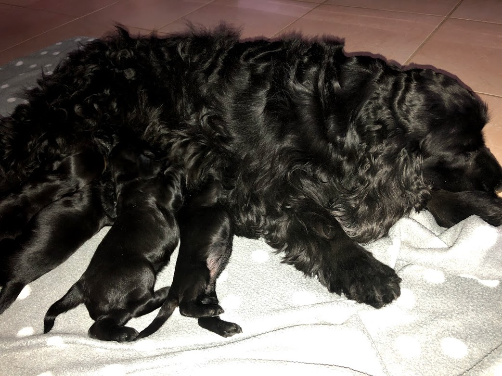
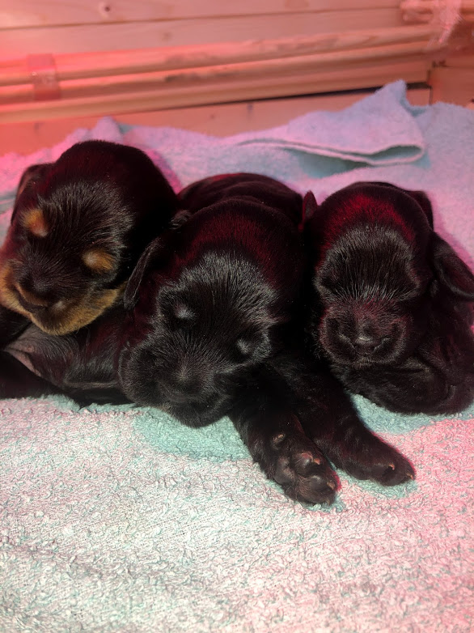
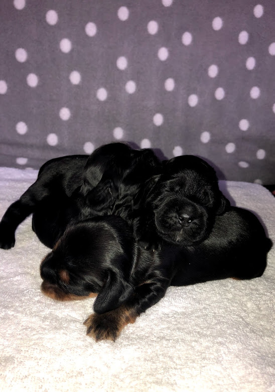

| Accueil | Présentation | L'agility | Aventures | Famille | Réseaux | Autres |
|---|
Depuis toujours j'ai eu des animaux et ma mère et mon père ont eu des animaux aussi. Qaund j'étais petite je vivais avec les chiens de mes parents (Shana un cocker et Mandarine un cavalier king charles).
Monroe bébé: 
Sa famille :
~ Ses parents
- Son père: Boy noir et feu 
- Sa mère: Julina feu 
~ Ses frères et soeurs
- Mia F noire et feu
- Mélchior M noir et feu
- Ménir M noir
- Madison M noir et feu
A voir sa fiche d'identification pour plus d'infos sur le site de la Centrale Canine! Sa fiche: Cliquez ici
Monroe a fait une portée de chiots entre déc 2020 et fév 2021.
La famille c'est donc agrandit !! Mais nous gardons pas tout les chiens mais qu'un seul!😄 Nous avons eu 4 magnifiques chiots : 3 femelles noires et un mâle noires et feu.
Le père est noir comme Monroe mais plus grand et plus vif! Il habite dans un petit village "" près de Baume les Dames. Il se prénome Nours. Allez voir c'est un mâle très titré et un chasseur! Sa fiche: Cliquez ici

Les parents :

Je vous présente donc les bébés:
La 1e née: Scarlett
La 2e née: Savana (renommé Sowa)
La 3e née: Sweety
Le 4e né: Safran (renommé Sirius)
💖 Né le 21/02/21 💖
si mignons!!! <3
    
PS: je vais essayer de faire un album ou un truc dans le genre pour réunir tout les bons souvenirs avec ses anges🥰😍😇